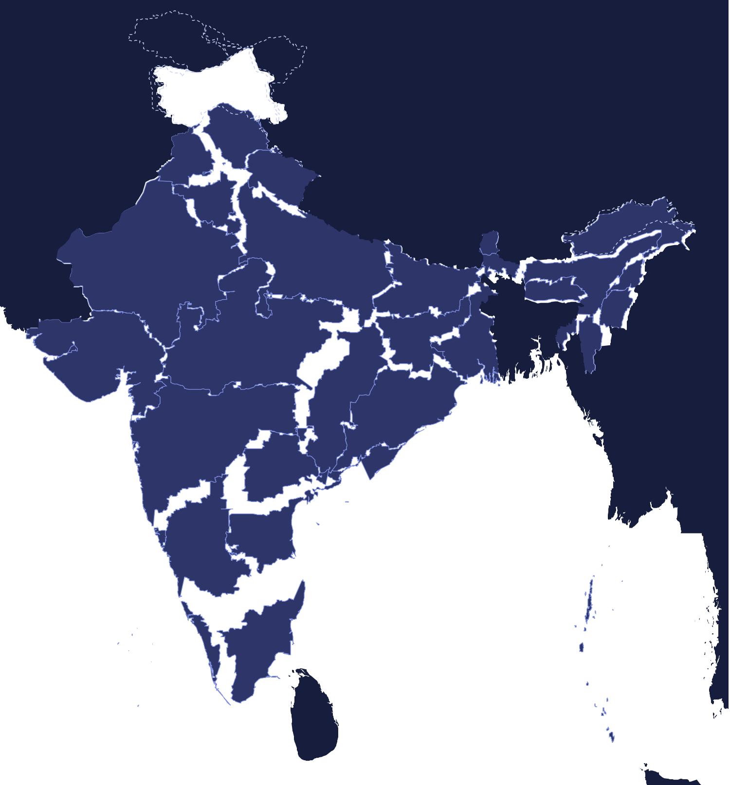

Official CBSE 2025-26 map items · History 2 marks + Geography 3 marks
Map work, drilled.
The full prescribed list, the real India map. 107 locations across 10 categories — movement sites, dams, mines, power plants, steel, textiles, IT parks, ports, airports, crops and soils. Learn every location, test yourself in Locate and Identify, or sketch your answers in Draw — zoom and pan right into the map.

100%
Pinch, double-tap or use +/− to zoom · drag to pan · items per the official CBSE 2025-26 list of map items · map base: India location map (Wikimedia Commons, CC-BY-SA) · markers are approximate exam locations